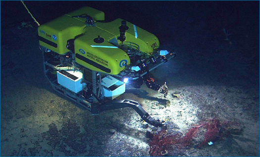

Experiments are one way to test some sorts of ideas, but science doesn't live on experiment alone. There are many other ways to scientifically test ideas too ...
What are experiments?
An experiment is a test that involves manipulating some factor in a system in order to see how that affects the outcome. Ideally, experiments also involve controlling as many other factors as possible in order to isolate the cause of the experimental results. Experiments can be quite simple tests set up in a lab - like rolling a ball down different inclines to see how the angle affects the rolling time. But large-scale experiments can also be performed out in the real world - for example, classic experiments in ecology involved removing a species of barnacles from intertidal rocks on the Scottish coast to see how that would affect other barnacle species over time. But whether they are large- or small-scale, performed in the lab or in the field, and require years or mere milliseconds to complete, experiments are distinguished from other sorts of tests by their reliance on the intentional manipulation of some factors and, ideally, the control of others.
Natural experiments
Some aspects of the natural world aren't manipulable, and hence can't be studied with direct experiments. We simply can't go back in time and introduce finches to three separate island groups to see how they evolve. We can't move the planets around to see how their orbits would be altered by a new configuration. And we can't cause volcanoes to erupt in order to investigate how they affect the ecosystems that surround them. However, such ancient, distant, and large-scale phenomena can be studied with the methods described below, and in many cases, we can observe the results of natural experiments on these systems. Natural experiments occur when the universe, in a sense, performs an experiment for us - that is, the relevant experimental set-up already exists, and all we have to do is observe the results.
To learn how a natural experiment provides support for the theory of general relativity, take an advanced side trip to Illuminating relativity: Experimenting with the stars.
More than just experiments
For many ideas in science, testing via experiment is impossible, inappropriate, or only part of the picture. In those cases, testing is often a matter of making the right observations. For example, we can't actually experiment on distant stars in order to test ideas about which nuclear reactions occur within them, but we can test those ideas by building sensors that allow us to observe what forms of radiation the stars emit. Similarly, we can't perform experiments to test ideas about what T. rex ate, but we can test those ideas by making detailed observations of their fossilized teeth and comparing those to the teeth of modern organisms that eat different foods. And of course, many ideas can be tested by both experiment and through straightforward observation. For example, we can test ideas about how chlorofluorocarbons interact with the ozone layer by performing chemical experiments in a lab and through observational studies of the atmosphere.